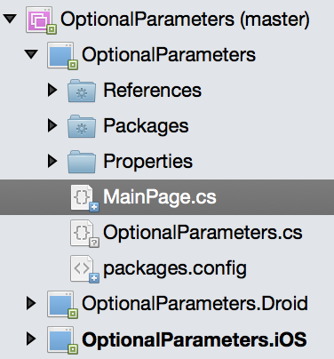
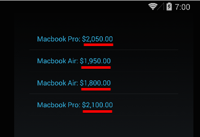

Duration
10 minutes
Lab goals
In this exercise, you will modify a Xamarin.Forms application to display possible computer purchases. The price you show will be determined by the parameters passed into a method. If you use the lab instructions, your UI will look something like:

Required Assets
The provided Resources folder for this part contains a subfolder named Start with a solution you will use as starter code. The Completed subfolder contains a completed project you can use to check your work.
Steps
Use a normal method with parameters
You are going to start with a pre-built program for purchasing computers. There are three different computer types you can buy, and with each one you can choose to get a warranty and/or have the technical team setup the computer for you. Based on the choices you make, a final price is calculated.
- Launch Visual Studio and open the OptionalParameters.sln file in the Resources/Start folder.
- Open the MainPage.cs file - this is part of the first project in your solution and is the one in which you will do all your work. 
-
Add some computer choices using the
PlaceOrdermethod. Go ahead and add some variations by changing the computer (use the predefined Computer1, Computer2 and Computer3 strings), and the booleans for AppleCare and computer setup and see what results display on the screen when you run the application. For example, you could use the code below, or provide your own combinations.
void PlaceOrders()
{
// TODO: add some computer choices using the PlaceOrder method
PlaceOrder(Computer1, false, false);
PlaceOrder(Computer2, true, false);
PlaceOrder(Computer2, false, true);
PlaceOrder(Computer1, true, true);
}

Add optional parameters
Management has decided that they want to really push the support and setup benefit, so every sale should default to having both of those turned on.
You are going to modify the PlaceOrder method to set those two parameters to true by default.
-
Change the
PlaceOrdermethod to set the two final parameters totrueby default. - Run the program and see how this change affects the existing calls. It should look exactly like it did before since we are explicitly passing all the parameters.
-
Now, remove the booleans from some of your calls to see the defaults being used - run the application and see how the price is changed.
Try different variations - passing
falsefor the first boolean and leaving the second off, leaving both off, supplying both, etc.
void PlaceOrder ( string computer, bool appleCare = true, bool setUp = true)
Summary
In this lab exercise, you added several variations to the PlaceOrder method. You also added default values to two booleans to see how
those changes would display on the screen.